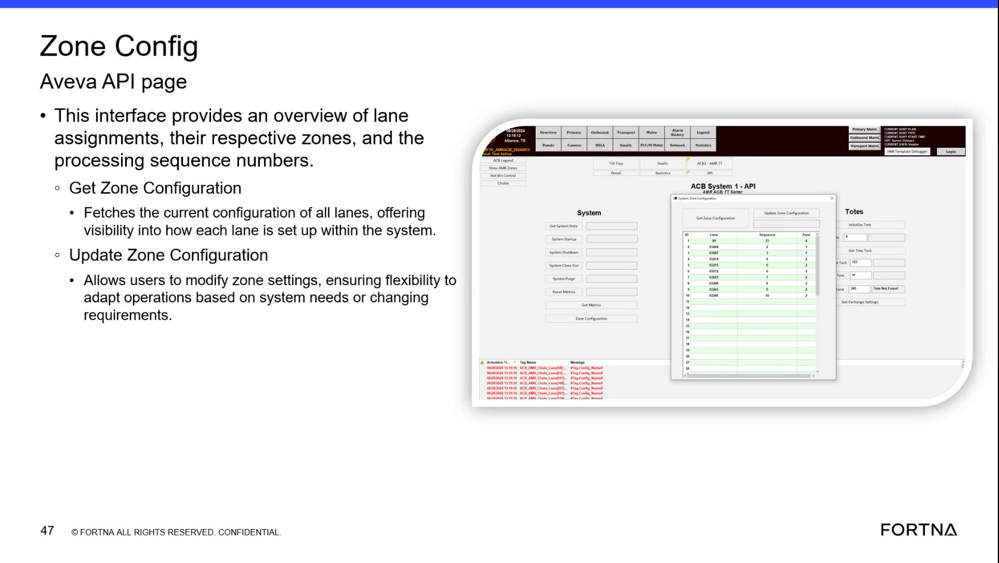

| Procedure ID | proc_view_current_lane_zone_configuration_on_the_zone_config_aveva_api_page_v1 |
|---|---|
| Title | View Current Lane Zone Configuration on the Zone Config Aveva API Page |
| Procedure Type | diagnostic |
| Primary Role | L1_support |
| Support Safe | Yes |
| Validation Status | needs_sme_review |
| Merge Status | source_finalized |
Use the Zone Config Aveva API page and its Get Zone Configuration function to view the current configuration of all lanes, including lane assignments, respective zones, and processing sequence numbers.
Use when you need visibility into the current lane configuration in the system and need to review lane assignments, zones, and processing sequence numbers using the Zone Config Aveva API page.
Responsible role: L1_support
Instruction:
Open or navigate to the Zone Config Aveva API page.
Expected result:
The Zone Config Aveva API page is displayed.
Screens / Images:

Stop or Escalate If:
Responsible role: L1_support
Instruction:
Locate the lane assignment, zone, and processing sequence number information shown on the page.
Expected result:
The displayed page content identifies lane assignments, respective zones, and processing sequence numbers.
Screens / Images:
Stop or Escalate If:
Responsible role: L1_support
Instruction:
Use the Get Zone Configuration function to fetch the current configuration of all lanes.
Expected result:
The system returns the current configuration of all lanes.
Screens / Images:
Stop or Escalate If:
Responsible role: L1_support
Instruction:
Review the returned lane setup information to verify how each lane is configured within the system.
Expected result:
The returned information provides visibility into how each lane is set up.
Screens / Images:
Stop or Escalate If:
Responsible role: L1_support
Instruction:
Compare the displayed lane assignments, respective zones, and processing sequence numbers against the information you need to confirm or record.
Expected result:
The needed lane configuration details are confirmed or recorded from the displayed information.
Screens / Images:
Stop or Escalate If: